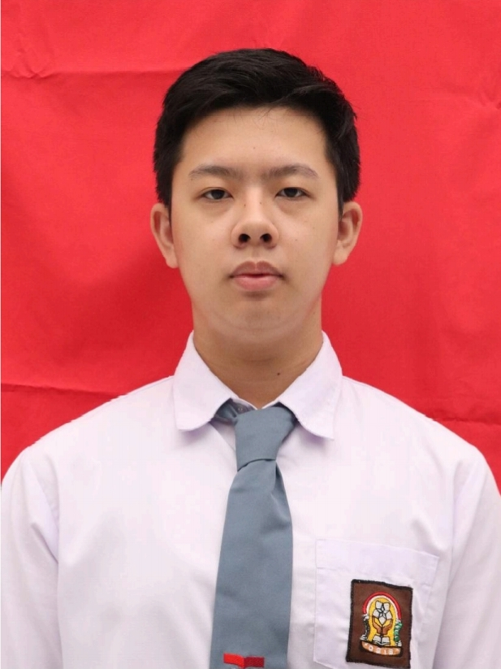

Hi Name, Selamat Datang di Website Saya
Portfolio Felix Raymond
Profil

Halo! Saya Felix Raymond, seorang pelajar kelas 11 jurusan Teknik Komputer dan Jaringan di SMK Telkom 2 Medan yang sedang berambisi mendapatkan beasiswa Universitas di China melalui pelatihan dan organisasi untuk meningkatkan skill saya. Saya sangat tertarik dengan semua hal terkait IT (IT Enthusiast). Saya mudah beradaptasi di lingkungan baru dan memiliki tingkat ingin tahu yang tinggi.
Keterampilan
- Web Developer
- Photography
- Internet of Things
- Design
- Video Editor
- Microsoft Excel
Prestasi

Juara Utama Bidang Informatika pada OSTN 2024
29 Desember 2024

Juara Utama Bidang Informatika pada OPSI 2025
9 Maret 2025

Medali Emas Bidang Informatika pada IYSHO 2025
16 Maret 2025

Medali Emas Bidang Informatika pada PON 2025
25 Mei 2025

Medali Emas Bidang Informatika pada OSI HP 2025
1 Juni 2025
Pendidikan
-
SMK Telkom 2 Medan
Jurusan Teknik Komputer dan Jaringan
Juli 2024 - Sekarang -
Global Prima National Plus School
Lulusan TK, SD, SMP
Juli 2012 - Juni 2024
Pengalaman
-
Osis SMK Telkom 2 Medan
Anggota Tim TI
Agustus 2024 - Sekarang -
Muda Mudi Cetiya Aryavamsa
Anggota Tim Medcom
April 2025 - Sekarang -
Coding Camp powered by DBS Foundation 2025
Pelatihan Web Developer/FEBE selama 6 bulan
Januari 2025 - Juni 2025 -
Revou Course
Data Analytics Mini Course selama 5 hari
16 - 20 Juni 2025